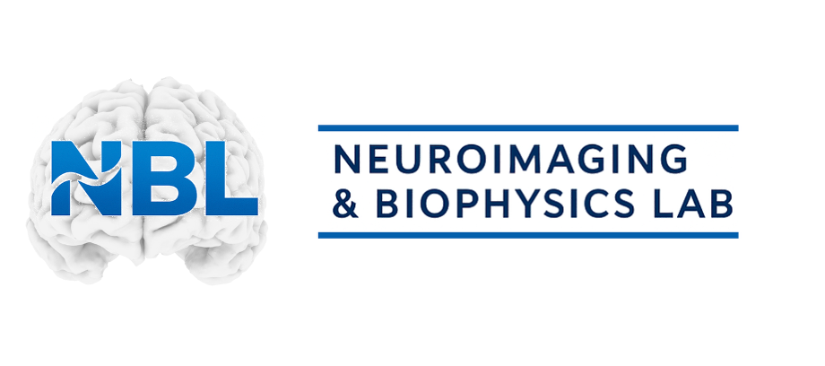
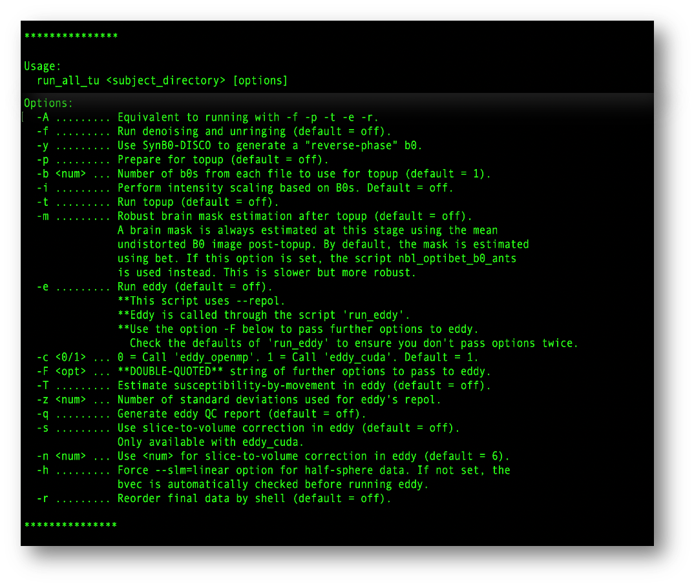

Diffusion MRI Preprocessing Pipeline

NBLtools is a comprehensive preprocessing pipeline for diffusion MRI data. It provides automated tools for data quality control and correction, ensuring your diffusion data is optimally prepared for analysis.
There are two ways to install and use NBLtools:
Detailed installation instructions for both methods are available below on this page.
Before running NBLtools, organize your data with the following structure. There are two scenarios depending on whether you have reverse phase-encode data or not.
Use this when you have acquired reverse phase-encode (blip-up/blip-down) data:
subject01/
└── dwi/
├── dwi.nii.gz # Diffusion weighted images
├── dwi.bval # B-values file
├── dwi.bvec # B-vectors file
├── dwi_rev.nii.gz # Reverse phase-encode data
├── dwi_rev.bval # B-values for reverse phase
├── dwi_rev.bvec # B-vectors for reverse phase
└── acqparams.txt # Acquisition parameters
The acqparams.txt file should contain the phase encoding directions and total readout time. Each row specifies: phase encoding direction (x y z) and total readout time in seconds.
0 1 0 0.086 0 -1 0 0.086
Note: You can add multiple diffusion files (e.g., dwi_01.nii.gz, dwi_02.nii.gz, etc.) with their corresponding .bval and .bvec files. NBLtools will automatically concatenate all files during processing. Remember to adjust the acqparams.txt file accordingly with one row per volume.
When reverse phase-encode data is not available, NBLtools can use SynB0-DISCO to generate a synthetic reverse b0 from a T1-weighted image. This requires a T1w in the anat/ folder:
subject01/
├── anat/
│ └── subject01_T1w.nii.gz # T1-weighted image (or subject01_T1w_brain.nii.gz if skull-stripped)
└── dwi/
├── dwi.nii.gz # Diffusion weighted images
├── dwi.bval # B-values file
├── dwi.bvec # B-vectors file
└── acqparams.txt # Acquisition parameters (single line)
For SynB0-DISCO, the acqparams.txt file should contain only a single line with the phase encoding direction of your DWI data:
0 1 0 0.086
Note: SynB0-DISCO will automatically generate the reverse phase-encode line. Use the -y flag when running NBLtools to enable this mode (see below). If a skull-stripped T1w is provided (subject01_T1w_brain.nii.gz), it will be used directly; otherwise SynB0-DISCO will perform its own skull stripping.
Once your data is organized, process it with a single command:
With reverse phase-encode data (standard topup):
run_all_tu ./subject01 -f -p -b 1 -i -t -m -e -c 0 -q
Without reverse phase-encode data (SynB0-DISCO):
run_all_tu ./subject01 -f -y -p -t -m -e -c 0 -q
Each parameter controls a specific preprocessing step:

The screenshot above shows all available parameters and their descriptions directly from the command line help.
For best performance and to take advantage of GPU/CUDA acceleration for eddy, a direct installation on your Linux, Windows Subsystem for Linux (WSL), or macOS system is the preferred option.
NBLtools requires the following software dependencies to be installed and fully configured in your PATH:
Advanced Normalization Tools for image registration and segmentation
FMRIB Software Library for brain imaging analysis. Install via conda and add the fsl-eddy-cuda package for GPU support (requires an NVIDIA GPU with compute capability 3.5+ and a compatible driver — no separate CUDA toolkit needed).
Tolerably Obsessive Registration and Tensor Optimization Indolent Software Ensemble
Minimum: 8GB
Recommended: 16GB+ for large datasets
Make sure all dependencies and NBLtools are in your PATH. You can do this by editing your shell configuration file (~/.bashrc, ~/.profile, or equivalent), or by installing them system-wide (e.g. via /etc/profile.d/).
# Add NBLtools preprocessing scripts to PATH export PATH="/path/to/nbltools/preprocessing:$PATH" # ANTs export PATH="/path/to/ANTs/bin:$PATH" # FSL and TORTOISE - follow their official installation guides # FSL via conda will configure itself automatically
Note: Replace the paths above with your actual installation directories. After saving, reload your shell configuration or log out and back in for changes to take effect.
For Windows, Linux, and macOS (Intel) users, we provide a Docker container with all dependencies pre-installed. This is the easiest way to get started with NBLtools. Note that the Docker image uses eddy_cpu by default, so processing will be slower than a native installation with GPU/CUDA acceleration.
First, pull the image:
Then create a launch script (e.g. run_nbltools.sh) to start the container with all necessary mounts. This single script covers both standard and SynB0-DISCO usage:
#!/bin/bash docker run -it \ -v /path/to/your/data:/data \ -v /var/run/docker.sock:/var/run/docker.sock \ -v /path/to/freesurfer:/freesurfer \ -e HOST_DATA=/path/to/your/data \ -e HOST_FREESURFER=/path/to/freesurfer \ -e FREESURFER=/freesurfer \ ghcr.io/nbl-research/nbltools bash
Replace /path/to/your/data with your data directory and /path/to/freesurfer with the directory containing your FreeSurfer license.txt. The Docker socket and FreeSurfer mounts are needed for SynB0-DISCO (-y flag); if you only use standard topup they can be omitted. Your data will be accessible inside the container at /data.
Once inside the container, run the pipeline as described in the Running NBLtools section above.
Note: SynB0-DISCO runs as a sibling Docker container alongside NBLtools, which is why the Docker socket (/var/run/docker.sock) must be mounted for it to work. The HOST_DATA and HOST_FREESURFER environment variables allow NBLtools to translate container paths back to host paths when launching the SynB0-DISCO container.
For questions, bug reports, or feature requests: